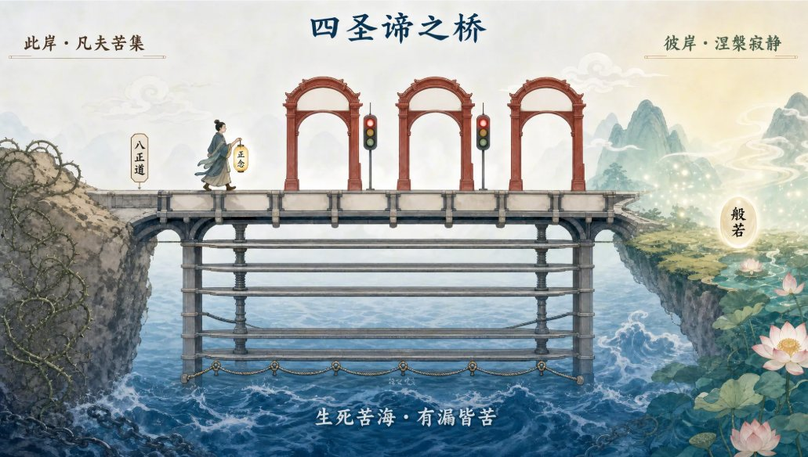

一句话结论：lovart.ai 出图后如果文字模糊或错字，不要直接点「编辑」——那会让 AI 自由发挥、可能改乱整张图。先画一张 Mask 遮罩图：黑色涂掉要改的字，白色保留背景；再调用 edit_media / task_type: edit_image，prompt 描述「用周围纹理自然填充」。背景（山水、图案、纹理）完整保留，只修字。
🎯 场景
用 lovart.ai 做图很爽，但成图里的文字经常出问题：英文乱码、中文错字、或者笔画糊成一团。传统做法是点击平台的「编辑」按钮，让 AI 按你的新描述重绘——但这会导致 AI 重新理解整幅画，容易把风格、构图、背景纹理都改掉。
如果你只想去掉/替换某块文字，同时保留背景的水墨、山水、图案、纹理，要用 inpainting（局部修复）。
🛠️ 核心做法：Mask 局部修复
- 准备原图：把 lovart.ai 生成的图下载下来。
- 做一张遮罩图（mask image）：
- 纯黑色 = 要修改/去掉文字的区域
- 纯白色 = 要完整保留的背景区域
- 调用修复接口：
- 入口：
edit_media - 参数：
task_type: edit_image - 传入：
source_image_url（原图）+mask_image_url（遮罩图） prompt写清楚：黑色区域要怎么修、用什么纹理填充、保持什么风格
- 入口：
✍️ 提示词示例
edit_media:
task_type: edit_image
source_image_url: [原图URL]
mask_image_url: [遮罩图URL]
prompt: 去除黑色区域的文字，用周围的水墨山水纹理自然填充，保持整体风格一致
task_type: edit_image
source_image_url: [原图URL]
mask_image_url: [遮罩图URL]
prompt: 去除黑色区域的文字，用周围的水墨山水纹理自然填充，保持整体风格一致
关键是 prompt 要指向背景纹理：「用周围的山水纹理自然填充」「保持原图水墨风格」「不要添加新元素」。这样 AI 才知道修完后要和周围融为一体，而不是凭空创作。
⚖️ 两种方式对比
| 方式 | 效果 | 适用场景 | 风险 |
|---|---|---|---|
| 无 Mask 的 edit_image | AI 自由发挥，可能重绘整张图 | 大范围改风格、整体重画 | 背景纹理、构图、色调可能全变 |
| 有 Mask 的 inpainting | 只改黑色区域，白色区域完全保留 | 局部去字、修瑕疵、替换文字 | 遮罩边缘要画准，prompt 要写清纹理 |
📸 实战对照

💡 使用建议
- 先小范围试：不要一次遮罩太大，先修一块看融合效果，再批量处理。
- 黑色边缘要紧贴文字：多涂一点问题不大，但少涂会留下字边；可以稍微外扩 2-3 像素。
- prompt 里写明「保持风格一致」：比只说「去掉文字」更稳，AI 会参考周围像素填充。
- 保留关键文字时列清单：像图 3 那样逐条列出要保留的内容，比口头描述更精确。
📌 一句话记住：想整张图重来 → 无 Mask 编辑；只想局部修字、背景不能动 → Mask 黑色涂字 + inpainting。修图稳不稳，看遮罩画得准不准、提示词有没有说清纹理。